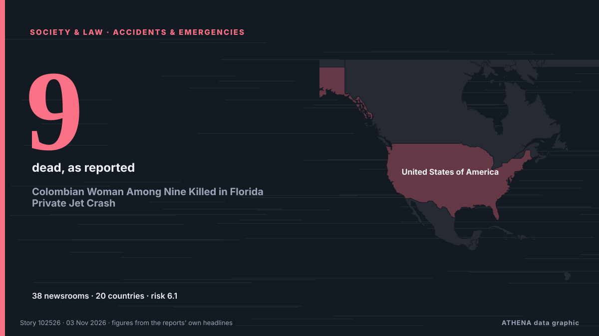

Colombian Woman Among Nine Killed in Florida Private Jet Crash

Family of four, two close friends and nanny also died in crash as pilot identified as 55-year-old Jeff Gregory Family members on Monday identified a young Florida pilot as one of nine victims of a… من The Guardian
نشرته بشكل مستقل 38 مصدرًا في 20 دولة منذ 2 نوفمبر، وأول من نشره The Guardian؛ والتغطية في ذروتها. يقدّر ATHENA الخطر بأنه مرتفع (6.1/10)، ويعود ذلك أساسًا إلى خطورة الضرر الموصوف ونطاقه الجغرافي والقطاعي. الثقة 88٪ (مرتفعة)، وعدد المصادر المستقلة المؤكِّدة: 38، بمتوسط موثوقية للمصادر يبلغ 73٪. وسائل الإعلام حسب البلد: المملكة المتحدة (9), الولايات المتحدة (6), أيرلندا (4). التغطية: من 2 نوفمبر إلى 3 نوفمبر، 14 ساعة.
لماذا يهم: تغيّر التعديلات القانونية والسياسية الحقوق والواجبات والخدمات العامة لمن تشملهم.
ما الذي تغيّر: 41 تقارير جديدة من 31 غرف أخبار خلال 24 ساعة حتى 3 نوفمبر.
العنوان الأول: Investigators search for cause in Florida plane crash that killed all nine onboard
تُعرض العناوين بالإنجليزية كما نُشرت.
نظرة سريعة
اختير وقُيِّم وكُتب وفق منهجية ATHENA المنشورة. لا يتدخل أي محرر في الأحداث بعينها. كيف يُنتَج ›
| 02 Nov 14:17 UTC | 1 |
|---|---|
| 02 Nov 15:17 UTC | 2 |
| 02 Nov 16:17 UTC | 6 |
| 02 Nov 17:17 UTC | 1 |
| 02 Nov 18:17 UTC | 4 |
| 02 Nov 19:17 UTC | 4 |
| 02 Nov 20:17 UTC | 2 |
| 02 Nov 21:17 UTC | 7 |
| 02 Nov 22:17 UTC | 2 |
| 02 Nov 23:17 UTC | 3 |
| 03 Nov 00:17 UTC | 4 |
| 03 Nov 01:17 UTC | 3 |
| 03 Nov 02:17 UTC | 0 |
| 03 Nov 03:17 UTC | 0 |
| 03 Nov 04:17 UTC | 6 |
| 03 Nov 05:17 UTC | 0 |
| 03 Nov 06:17 UTC | 1 |
| 03 Nov 07:17 UTC | 0 |
| 03 Nov 08:17 UTC | 1 |
| 03 Nov 09:17 UTC | 1 |
| 03 Nov 10:17 UTC | 0 |
| 03 Nov 11:17 UTC | 0 |
| 03 Nov 12:17 UTC | 1 |
| 03 Nov 13:17 UTC | 0 |
| 03 Nov 14:17 UTC | 0 |
| 03 Nov 15:17 UTC | 0 |
| 03 Nov 16:17 UTC | 1 |
| 03 Nov 17:17 UTC | 1 |
| 02 Nov 15:27 UTC | 3.9 |
|---|---|
| 02 Nov 17:04 UTC | 4.5 |
| 02 Nov 23:52 UTC | 6.3 |
| 03 Nov 01:05 UTC | 5.6 |
| 03 Nov 18:10 UTC | 6.1 |
لماذا هذه الأرقام
الأهمية
الخطر
الثقة
التغطية — من نشر الخبر ومتى
العنوان كما نُشر · يفتح الأصل- The Guardian · المملكة المتحدةYoung co-pilot, 20, named as one of nine victims of deadly Florida plane crash
- France 24 English · فرنساNine dead in small plane crash near Trump's Florida home
- Chronicle Live (Newcastle) · المملكة المتحدةLearjet co-pilot, 20, named after fatal Florida crash with chilling final 'we're out of time' message
- ProtoThema English ·‘I can’t drive, but I can fly’: Tragic story of 20-year-old co-pilot killed in Florida plane crash
- The Independent · المملكة المتحدة20-year-old woman was part of team piloting plane that slammed into Florida street killing 9
- CBC News (alternative feed) · كنداCouple, 2 children and a 20-year-old pilot among 9 dead in Florida crash
- Irish Mirror · أيرلنداFlorida plane crash: Family named co-pilot, 20, after chilling final words heard on distress call
- Anadolu Agency (English) · تركياPilot who got license in high school co-piloted plane that crashed in Florida: Report
- Manchester Evening News · المملكة المتحدةLearjet co-pilot heard screaming 'We're out of time' before fatal Florida crash named
- The Canadian Press (via CityNews) · كنداVictims of Florida plane crash include a 20-year-old who got her pilot’s license as a teen
- Irish Mirror · أيرلنداPlane co-pilot sent chilling six-word text to boyfriend minutes before fatal crash
- Chronicle Live (Newcastle) · المملكة المتحدةFlorida co-pilot's chilling text to boyfriend minutes before tragic plane crash
- ABC News Australia · أسترالياParts of jet appear to have broken off before fatal Florida crash
- Courthouse News · الولايات المتحدةEvidence indicates parts of jet broke off before Florida crash that killed 9, investigators say
- Sydney Morning Herald · أسترالياCo-pilot identified in deadly US plane crash
- PBS NewsHour · الولايات المتحدةParts of a Learjet may have broken off midair before Florida crash that killed 9, investigators say
- BBC News · المملكة المتحدةWhat Florida jet audio and flight data tells us about its final moments
- The Hill · الولايات المتحدةWoman identifies daughter, 20, as one of the pilots on jet that crashed in Florida
- Irish Mirror · أيرلنداFlorida horror plane crash kills 'married couple and two toddlers' with co-pilot, 20
- Livemint · الهندLearjet May Have Broken Up Before Fatal Florida Crash, NTSB Says
- Manchester Evening News · المملكة المتحدةTwo toddlers and multi-millionaire parents named as Florida Learjet crash victims
- Chronicle Live (Newcastle) · المملكة المتحدةFlorida plane crash victims named as couple and children among nine Learjet 60 dead
- Al Jazeera English · قطر‘Work to do’: Authorities give update on Florida private jet crash
- Forbes Business · الولايات المتحدة20-Year-Old Co-Pilot Died In Florida Learjet Crash That Killed 9, Family Says
- Business Insider · الولايات المتحدةNASA administrator tells the internet to stop criticizing copilot of crashed Learjet 60
- Sydney Morning Herald · أسترالياFlorida jet crash passengers and co-pilot identified as investigators hunt for clues
- The Independent · المملكة المتحدةTech entrepreneur, wife, kids and friends among victims in Florida plane crash
- MyJoyOnline · غاناCopilot in deadly Florida jet crash identified in reports as 20-year-old
- Stuff · نيوزيلنداAll victims in horror Learjet crash identified
- New Straits Times · ماليزياWeather, Mayday call key to probe into Florida Learjet crash that killed nine
- Free Malaysia Today · ماليزياBad weather a ‘major’ focus of Florida plane crash probe
- PBS NewsHour · الولايات المتحدةNews Wrap: Parts of jet may have broken off before crash in Florida
- CNA (Channel NewsAsia) · سنغافورةInvestigators say Learjet may have broken up before crashing in Florida
- RTÉ News · أيرلنداBad weather a 'major' focus of Florida plane crash probe
- Gulf News · الإمارات العربية المتحدةVictims of Florida plane crash include a 20-year-old copilot, tech entrepreneur and his family
- NDTV · الهندProbe Finds Learjet Parts Broke Up Before Florida Jet Crash
- Livemint · الهندFlorida Learjet crash victims identified: 20-year-old copilot, tech entrepreneur and his family among those killed
- NDTV · الهندLearjet Co-pilot Who Called 'Mayday' Before Florida Crash Was 20
- Daily Mirror · سريلانكاWho are the victims of the deadly Florida jet crash?
- The San Juan Daily Star · بورتوريكوA 20-year-old was a pilot of the jetthat plunged to Earth in Florida